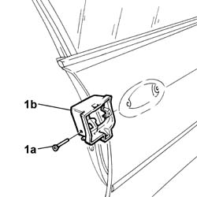

7005C56 Front door opening device (one), left or right, complete with rod lock - R.R. with door panel removed
- Path
- Procedures > 70 FITTINGS > 7005 passenger compartment front side doors > 7005C front door lock controls > 7005C56 Front door opening device (one), left or right, complete with rod lock - R.R. with door panel removed
- Kind
- repair procedure (removal / refitting; the operation number is the code)
- Applies to
- all engines; all production periods
- Interactive page
- https://sloeber94.github.io/elrnDB-lThss/en/#/109099
Applies to: all engines; all production periods
 Removing
Removing
 Refitting
RefittingSee in Op. 7005A04 Front side door WATER GUARD PROTECTION -R R. or Postion with door panel removed
See in Op. 7005C10 Front door OUTER HANDLE - R.R. with door panel removed
1. Undo the bolt (1a) and remove the door opening device (1b).

Applies to: all engines; all production periods
Refitting
Removing- Fit the door opening device and tighten the fixing bolt.
See in Op. 7005C10 Front door OUTER HANDLE - R.R. with door panel removed
See in Op. 7005A04 Front side door WATER GUARD PROTECTION -R R. or Postion with door panel removed
Topics linked from this page (2)
- 7005A04 Front side door WATER GUARD PROTECTION -R R. or Postion with door panel removed
- 7005C10 Front door OUTER HANDLE - R.R. with door panel removed